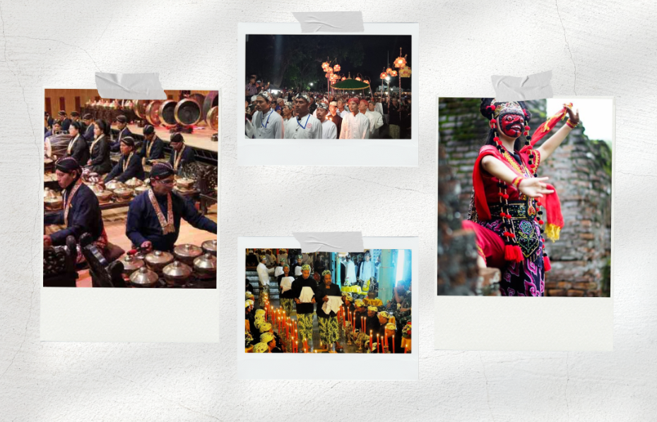

About Us
Kacirebonan Web showcases Cirebon’s cultural richness in the digital space. From traditions, history, to local cuisine, it’s presented in a modern and accessible design. This platform serves as an interactive hub for anyone interested in exploring, appreciating, or preserving the unique heritage of Cirebon.
Tentang Web Kacirebonan
Web Kacirebonan hadir untuk memperkenalkan kekayaan budaya Cirebon ke dunia digital. Dari tradisi, sejarah, hingga kuliner lokal, semua dibalut dalam tampilan yang modern dan mudah diakses. Diharapkan platform ini menjadi ruang interaktif bagi siapa pun yang ingin mengenal atau melestarikan budaya Cirebon.

test
Tinggalkan Komentar